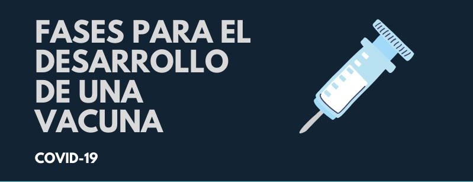

Paises con mayor avances
China comenzo los ensayos clínicos en humanos de una vacuna contra el coronavirus desarrollada "con éxito" por la Academia Militar de Ciencias y preparada para "una producción a gran escala, segura y efectiva" . Brasil algunos brasileños del laboratorio de Inmunología del Instituto del Corazón (Incor) de la Facultad de Medicina de la Universidad de Sao Paulo (USP), desarrollan una vacuna contra el coronavirus con un método diferente al utilizado hasta ahora por la industria farmacéutica. Australia equipo de investigadores del Instituto de Infección e Inmunidad Peter Doherty, de la Universidad de Melbourne, descubrió cómo el sistema inmunológico combate el COVID-19, esta investigacion se llevo a acabo ya que estudiaron muestras de sangre de una paciente infectada con el coronavirus de 47 años que había viajado de la ciudad china desde Wuhan, a Australia lo que podría resultar de vital importancia para hallar una vacuna. Estados Unidos la vacuna se denomina RNA-1273 y ha sido desarrollada por científicos del Instituto Nacional de Alergia y Enfermedades Infecciosas (NIAID) y de la compañía de biotecnología Moderna, informaron los Institutos Nacionales de Salud (NIH, en inglés), que destacaron que el proyecto de inoculación frente al coronavirus ha tenido resultados prometedores en modelos animales. España no tiene un proyecto específico el suministro de equipos médicos, sigue analizando el sistema inmunologico de personas afectadas para lograr una vacuna.
Reino Unido un equipo de investigadores de la universidad Imperial College de Londres cree estar cerca de poder desarrollar una vacuna contra la enfermedad del coronavirus después de probarla con éxito en ratones, se seguira avanzando con otros animales y si se mantiene con exito procederan a provar con humanos en junio 2021. Israel el Instituto de Investigación Migal, con sede en Galilea, Israel, desarrolló una vacuna contra el coronavirus. Esperan esté disponible en unos 90 días y será administrada oralmente, ya que segun invesigacions oral crea mas anticuerpos para el conbate con el virus.